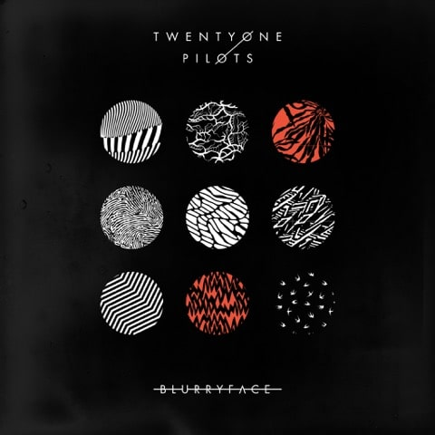

Blurryface was well-received by critics, who complimented its themes and musical diversity.
It is considered to be the band's breakthrough album, becoming their first and only release to date to reach number one on the Billboard 200. The album sold over 1.5 million copies in the United States as of April 2017.
In 2018, Blurryface became the first album in the digital era to have every track receive at least a gold certification from the Recording Industry Association of America.
On May 15, 2019, it reached the milestone of being on the Billboard 200 chart for four consecutive years, never leaving the chart up until that point. It is also the most-streamed rock album in history.

Background. MF Doom described Mm.. Food as a concept album "about the things you find on a picnic,
or at a picnic table". The album's titles and lyrics contain references to different foods, some with common metaphors and double entendres in the "street world" and the "nutritional realm".

Origin of Symmetry is the second studio album by English rock band Muse, released on 18 June 2001 through Taste Media. It was produced by John Leckie, who produced Muse's debut album, Showbiz (1999), and David Bottrill.
Origin of Symmetry reached number three on the UK Albums Chart[1] and was certified platinum.
Four singles were released: "Plug In Baby", "New Born", "Bliss", and "Hyper Music" / "Feeling Good". As of 2018, Origin of Symmetry had sold more than two million copies worldwide.
It received mostly positive reviews, with critics praising its blend of rock and classical music. It has since been named one of the greatest rock albums of the 2000s by several publications.